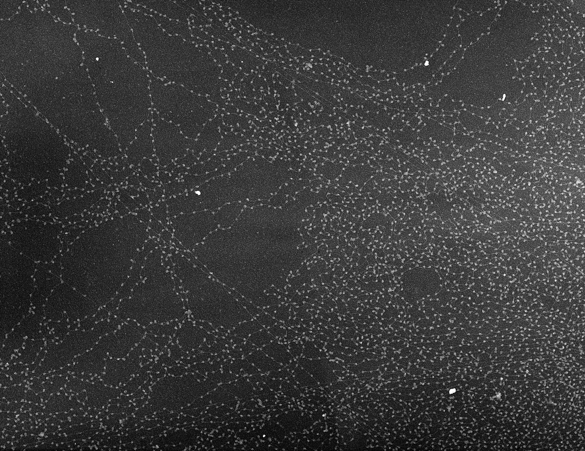
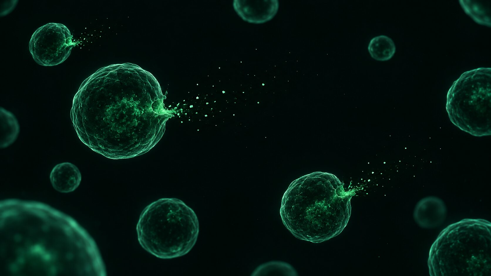

In the cell
DNA is wound around proteins.
Like beads on a string. The wrapped parts are protected, the parts in between are exposed.
In the blood
The exposed parts are cut.
When cells die, their DNA breaks at the unprotected places. The fragments keep a trace of how the DNA was packed.
In the data
The pattern can be learned.
Sequencing reads out each fragment. A model learns which patterns go with which cells and conditions.